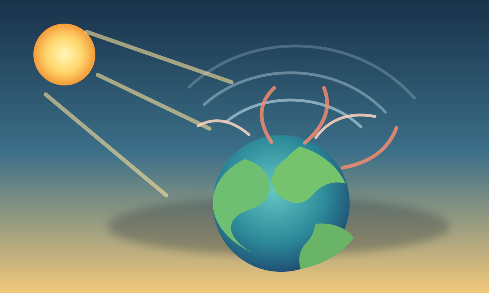

觀察能量進出
能用圖像說明太陽短波進入、地表長波紅外線向外散出，以及溫室氣體吸收部分熱量。

國小自然｜探究、實作、行動設計
調整二氧化碳、雲量與地表反射，觀察熱量如何進出地球。先預測，再操作，最後設計一個能降溫的生活方案。
單元導覽
能用圖像說明太陽短波進入、地表長波紅外線向外散出，以及溫室氣體吸收部分熱量。
知道自然溫室效應是必要現象，增強溫室效應則和大量燃燒化石燃料、土地利用改變有關。
能選擇生活或校園行動，評估減碳效果、可行性與需要合作的對象。
能判斷常見說法是否符合科學證據，並用一句話解釋自己的判斷。
單元一
點選右側模式，觀察熱量散出與回射的差別。
適量的水氣、二氧化碳和甲烷會留住一部分熱量，讓地球平均溫度不會太低。
單元二
先想一想：哪些因素會讓地球吸收更多熱？調整滑桿後，觀察模型回饋。
調整滑桿後，觀察太陽光反射、紅外線散出與熱量回射如何改變。
單元三
選擇最多 4 個行動，讓班級的「可行減碳指數」達到 100。注意：效果高不一定最容易做到。
先挑選你想實作的方案。
單元四
點選左邊說法，判斷它比較接近科學證據，還是常見迷思。
好的科學判斷需要看長期資料、能量收支和多種證據，而不是只看某一天的天氣。
最終關卡
完成 10 題測驗，看看你能不能拿到「氣候探究員」徽章。